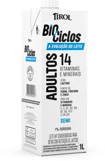
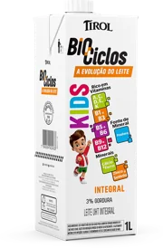

BioCiclos + Proteína 70 g no varejo alimentar e no atacarejo.
A tese: transformar o espaço de exposição do BioCiclos em um ponto de reconhecimento e decisão, tornando o benefício nutricional fácil de perceber, compreender e escolher.
Produto em focoBioCiclos + Proteína
CanaisVarejo e atacarejo
EdiçãoNovembro de 2026
14 gde proteína por copo de 200 ml
Síntese executiva
O planejamento em seis respostas.
O cliente pediu
Materiais de PDV para aumentar a visibilidade dos produtos Tirol no varejo e no atacarejo.
Ele realmente precisa
Fazer o BioCiclos ser percebido, compreendido e considerado no momento da compra.
Grande oportunidade
Traduzir o benefício nutricional em mensagem simples, reconhecível e relevante à rotina.
Estratégia
Criar um bloco BioCiclos com marca, 14 g de proteína por copo e facilidade de escolha.
O que a 75LAB deve fazer
Desenvolver um sistema modular adaptado à gôndola e à exposição de volume.
Próximo passo
Validar fotos reais, assets oficiais, claims e restrições físicas antes dos dois mockups.
A oportunidade não está na peça mais chamativa, mas em um sistema que faça o shopper identificar a Tirol, entender o benefício e encontrar o produto sem dificuldade.
Capítulo 1
Diagnóstico
O desafio, o briefing, a marca, o mercado, a concorrência e o shopper.
Leitura do desafioBriefingO que sabemosO que falta descobrirMarcaMercadoConcorrênciaShopper e jornadaTendências
01
01Leitura do desafio
O problema não é falta de material. É falta de vantagem percebida na hora da escolha.
O que o cliente pediu
Um sistema de réguas, stoppers, blocos de marca e testeiras para o BioCiclos + Proteína, com duas aplicações: varejo e atacarejo, mostrando como o produto é percebido à distância e compreendido de perto.
→
O que precisa resolver
Transformar a presença física do produto em uma vantagem perceptível no momento da escolha.
Visibilidade
Ser encontrado em um corredor visualmente competitivo.
Compreensão
Deixar claro que o leite oferece uma proposta nutricional diferenciada.
Conversão
Justificar a escolha frente às alternativas e ao possível diferencial de preço.
Primeiro achado estratégico: 14 g de proteína por copo é um argumento relevante, mas não exclusivo. A Camponesa também comercializa leite UHT zero lactose com 14 g por 200 ml. A oportunidade é a Tirol ganhar uma associação clara entre produto, benefício, marca e praticidade, e não apenas competir pelo maior número no material. [F1, F4]
Fundada em 1974, em Treze Tílias (SC), a Tirol construiu sua trajetória em lácteos, qualidade e confiança. Em julho de 2026 apresentou o posicionamento “Incrível é fazer com Tirol”. BioCiclos trabalha o território “A evolução do leite”, com variantes por fase ou objetivo de consumo. [F1, F2, F3]
Arquitetura de comunicação recomendada
Marca endossante
TIROL · familiaridade e confiança.
Identidade de linha
BIOCICLOS · reconhecimento no corredor.
Variante e benefício
+ PROTEÍNA 70 g/L · traduzida em 14 g por copo de 200 ml.
Mensagem de apoio
ZERO LACTOSE · visível, sem competir com a mensagem central.


Códigos visuais a preservar
Branco · continuidade com a embalagem e clareza.
Preto · contraste e reconhecimento da variante.
Dourado · destaque seletivo e qualidade.
Direção: estender o sistema visual do produto à gôndola, com tipografia forte e a embalagem original como ativo obrigatório, em vez de criar uma campanha paralela.
Posicionamento pretendido não é percepção real: se o shopper reconhece a linha, associa à Tirol e diferencia a versão proteica ainda precisa ser avaliado em pesquisa.
06Contexto de mercado
A proteína avança, mas o interesse não garante a escolha de uma marca.
R$ 1,145 tri
Varejo alimentar Brasil, 2025. Total setorial, não a categoria de leite UHT. [F5]
+12%
Produtos com proteína adicionada, em valor. Ano móvel até o 1º tri/2026 vs. anterior. [F6]
21% dos lares
12,8 milhões de lares compram produtos com proteína adicionada, em diversas categorias. [F6]
Segundo a Worldpanel by Numerator (13/10/2026), a categoria é impulsionada pela busca de conveniência e de relação custo-benefício; clareza da quantidade por porção é especialmente importante. [F6]
01Apresentar um benefício facilmente compreensível.
02Conectar o produto ao consumo cotidiano.
03Facilitar a avaliação de valor em relação ao preço.
04Garantir disponibilidade e execução consistente.
Limitação: esses números não medem especificamente o mercado brasileiro de leite UHT proteico de 1 litro e não devem ser usados para projetar vendas da variante.
07Concorrência
Quando todos falam de proteína, o número sozinho deixa de diferenciar.
Marca
Proposta verificada
Implicação para a Tirol
Camponesa · Leite UHT Proteína Zero Lactose
14 g por 200 ml, zero lactose. [F4]
Concorrente direto, com a mesma quantidade comunicada.
Itambé · Leite Protein 1 L
5 g por 100 ml = 10 g por 200 ml, zero lactose. [F7]
Disputa por nutrição e saudabilidade.
Piracanjuba · Zero Lactose +Protein 1 L
Comunica 10 g de proteína e ausência de lactose. [F8]
Reforça o repertório proteico na gôndola.
Molico · Linha UHT
Associação histórica da marca com nutrição.
Disputa por confiança e escolha saudável.
Concorrência indireta: bebidas proteicas prontas, iogurtes, suplementos e outros alimentos de apelo proteico disputam a intenção de consumo, embora não sejam substitutos perfeitos do leite UHT.
Espaço de diferenciação
TIROL + BIOCICLOS + 14 g POR COPO + ZERO LACTOSE + contexto de consumo
Argumentos de produto checados nas fontes; não houve auditoria física das peças dos concorrentes nas redes-alvo. Visibilidade, frentes e materiais devem ser investigados em campo.
08Shopper e público
Falar com quem procura e com quem descobre o leite funcional.
Orientado à nutrição
Compara proteína, gordura, ingredientes e preço.
Design: destacar a quantidade por porção com clareza.
Compra habitual
Compra leite rotineiramente, sem buscar necessariamente a versão proteica.
Design: interromper com baixo esforço de leitura.
Atento à lactose
Procura identificar a ausência de lactose.
Design: preservar o claim de apoio.
Atacarejo
Pode comprar por unidade ou em volume; compara preços e acesso.
Design: testar leitura à distância e reposição livre.
Principal aprendizado: o material precisa servir tanto a quem procura deliberadamente um leite funcional quanto a quem descobre a opção em uma compra de rotina. Falar apenas com atletas restringe o público sem necessidade.
Segmentos comportamentais de planejamento, não perfis medidos especificamente para a Tirol.
Usar situações cotidianas, se não prejudicarem a leitura.
Execução modular
Criar uma família de peças por canal e cluster.
Tecnologia: não há evidência suficiente de que telas, sensores ou inteligência artificial melhorem esta decisão de compra a ponto de justificar o investimento. Um QR Code pode apoiar conteúdo aprovado em etapa futura, mas não deve disputar atenção com o benefício principal.
Sinais do estudo de consumo da Worldpanel e da evolução recente de comunicação e portfólio da Tirol. [F2, F3, F6]
Capítulo 2
Estratégia
Insights, tensão central, oportunidade, pilares e territórios conceituais.
A porção de consumo aproxima o benefício da rotina.
14 g por copo.
02
Outra marca também oferece 14 g.
O número não é necessariamente exclusivo.
Vincular o benefício à identidade BioCiclos.
03
Embalagem predominantemente branca.
Pode perder contraste diante de outras caixas claras.
Construir bloco preto, branco e dourado.
04
Leite é compra habitual.
A marca precisa dialogar com hábitos existentes.
Mostrar consumo cotidiano.
05
Preço potencialmente diferente.
Atenção não implica intenção de compra.
Manter preço legível e proposta clara.
06
Dois canais diferentes.
Uma mesma peça redimensionada pode falhar.
Mesma linguagem, arquitetura distinta.
07
Peças convivem com reposição.
Material que atrapalha a operação tende a ser removido.
Facilidade de manutenção como premissa.
08
Marca tem território institucional e de linha.
É possível unir confiança e inovação funcional.
Usar Tirol como marca endossante.
10Três insights prioritários
Concretizar, reconhecer, operar.
01
Concretizar
O número mais útil é o que o consumidor reconhece em sua porção cotidiana, não necessariamente o maior número da embalagem.
02
Reconhecer
Se várias marcas falam em proteína, a Tirol precisa ganhar associação entre identidade, benefício e presença física.
03
Operar
O impacto só existe enquanto a comunicação permanece instalada, visível, abastecida e próxima do produto.
Esses insights conduzem as decisões de hierarquia, layout, materiais, exposição e critérios de produção.
11Tensão central
Quatro conflitos avaliados. Um escolhido.
Tensão
Desejo
Conflito
Informação vs. compreensão
Entender o benefício rapidamente.
Dados nutricionais exigem interpretação.
Diferenciação vs. semelhança
Encontrar o produto mais adequado.
Várias marcas usam argumentos parecidos.
Valor vs. preço
Perceber um benefício justificável.
A categoria também é comparada por preço.
Impacto vs. operação
Ter destaque expressivo.
A peça não pode dificultar retirada e reposição.
Tensão escolhida
O shopper pode estar aberto a um leite com mais proteína, mas não necessariamente consegue perceber, compreender e justificar essa escolha enquanto compra leite.
Essa tensão liga comportamento, categoria, comunicação e venda. É mais abrangente do que a ausência de uma régua ou testeira.
12 · 13Oportunidade e “como podemos”
Como podemos transformar o espaço de exposição do BioCiclos + Proteína em um ponto de reconhecimento e decisão, fazendo o shopper identificar a Tirol, entender os 14 g de proteína por copo e encontrar produto e preço sem esforço?
Cresce o interesse por alimentos proteicos, mas a vantagem de cada opção precisa ser traduzida em benefício concreto no momento da compra.
Categoria
Facilitar a navegação entre leites tradicionais e variantes de proposta nutricional especial.
Marca
Construir um código próprio de reconhecimento BioCiclos.
Negócio
Ampliar a consideração do produto sem depender exclusivamente de promoção.
Esta pergunta orienta todas as escolhas futuras de design, arquitetura, comunicação e implementação.
14Estratégia
Criar um bloco de marca que transforme informação nutricional em reconhecimento imediato e facilidade de escolha.
De
Uma variante funcional que depende da embalagem individual para comunicar sua vantagem.
→
Para
Um bloco BioCiclos reconhecível, que explica seu benefício antes da leitura detalhada do rótulo.
+
Através de
Um sistema modular de comunicação com contraste visual, proteína por porção, marca e disponibilidade do produto.
15Pilares estratégicos
Destacar, traduzir, facilitar, escalar.
01
Destacar
Atenção
Tornar BioCiclos identificável em meio à concorrência, com unidade visual, contraste e marca reconhecível.
02
Traduzir
Compreensão
Apresentar o benefício numa medida cotidiana: 14 g por copo de 200 ml, com zero lactose como apoio.
03
Facilitar
Compra
Reduzir a fricção entre identificar e comprar: preço legível, organização e acesso direto.
04
Escalar
Execução
Garantir execução econômica e replicável: materiais modulares, instalação simples e manutenção rápida.
16Territórios conceituais
Quatro caminhos para o mesmo problema.
14 g no seu dia
Tornar a quantidade de proteína próxima do consumo cotidiano.
Usa 14 g por porção, em vez de depender apenas de 70 g por litro. Conecta diretamente ao benefício BioCiclos. Desdobramentos: leitura de 14 g, porção e embalagem; régua, stopper, testeira, conteúdo digital de apoio.
Clareza
Alta
Força de marca
Alta, com endosso
Execução
Alta
Papel
Principal
A evolução do leite
Mostrar BioCiclos como evolução da categoria.
Preserva o território da linha, seu contraste e sua linguagem funcional. Desdobramentos: comunicação centrada na marca; bloco, ponta de gôndola e expansão para variantes.
Clareza
Média
Força de marca
Muito alta
Execução
Alta
Papel
Complementar
Proteína na rotina
Mostrar que o leite proteico cabe nos hábitos do dia a dia.
Amplia o repertório para além da academia e dialoga com o posicionamento institucional Tirol. Desdobramentos: café da manhã, copo de leite e preparações simples; apoio visual e conteúdo contextual.
Clareza
Média
Força de marca
Alta
Execução
Média
Papel
Apoio
Escolha sem dúvidas
Organizar as informações decisivas numa única área de decisão.
Reduz o esforço de comparar benefício, preço e embalagem. Desdobramentos: régua, preço, comunicação de volume e orientação de compra.
Clareza
Alta
Força de marca
Média
Execução
Muito alta
Papel
Funcional
Frases e layouts são rotas de conceito, não mensagens aprovadas pela Tirol. Avaliação qualitativa de planejamento, sujeita a teste de leitura e percepção.
16Direção recomendada
Três territórios, três camadas de um mesmo sistema.
Mensagem principal
14 g no seu dia
O benefício traduzido para a porção cotidiana.
Reconhecimento de marca
A evolução do leite
A base que liga o PDV à linha BioCiclos.
Camada funcional
Escolha sem dúvidas
Preço, embalagem e benefício organizados na área de decisão.
A força do conceito está na clareza da comunicação e na combinação entre marca, quantidade e contexto, não em uma frase publicitária extensa.
Capítulo 3
Solução
Um mesmo sistema visual com duas arquiteturas: bloco de decisão no varejo, bloco de visibilidade no atacarejo.
Hero + Support + ScaleConceito varejoConceito atacarejoTeste de leituraClusters e produçãoInovações
03
17Ecossistema de soluções
Um elemento central, peças de apoio e kits que escalam.
HERO
Bloco BioCiclos
Elemento central para identificar o produto e o benefício.
SUPPORT
Peças de apoio
Régua, stopper, informação complementar, área de preço e orientação de exposição.
SCALE
Kits por cluster
Kits adequados a clusters de lojas, espaço, operação e orçamento.
Canal
Papel do bloco
Arquitetura
Prioridade funcional
Varejo
Bloco de decisão
Régua contínua + stopper compacto.
Reconhecimento na gôndola, facilidade de escolha, preço visível.
Atacarejo
Bloco de visibilidade
Testeira contrastante + produto em volume.
Leitura à distância, preço visível e fácil reposição.
17Conceito 01 · Varejo alimentar
Bloco de decisão: régua contínua, stopper compacto, preço preservado.
BioCiclos
14 g de proteína
POR COPO DE 200 mlZERO LACTOSE
14 gpor copo
BioCiclos+ Proteína · A evolução do leite14 g / copoR$ —,—
Esquema de estudo, não arte final · embalagens agrupadas e preço da loja preservado
De longe
O bloco preto e branco comunica BioCiclos, Tirol e 14 g.
De perto
Proteína por copo, zero lactose, embalagem de 1 litro e preço.
Materiais
Régua na frente de prateleira, stopper perpendicular compacto e, com espaço negociado, pequeno destaque superior ou ponta de gôndola.
Diretrizes de implantação
·Régua na altura disponível do porta-preço, sem cobrir etiquetas.
·Stopper respeita circulação, visibilidade e retirada do produto.
·Não é preciso repetir o stopper em todas as prateleiras.
·Produtos agrupados e de frente para o shopper.
·Ponta de gôndola é opcional, condicionada à rede e ao investimento.
17Conceito 02 · Atacarejo
Bloco de visibilidade: testeira contrastante sobre produto em volume.
BioCiclos
14 g de proteína
POR COPO DE 200 mlZERO LACTOSE · 1 L
Preço da lojaR$ —,—
Esquema de estudo · fixação, quantidade e medidas dependem da loja e do mobiliário
De longe
Assinatura Tirol BioCiclos e 14 g de proteína.
De perto
200 ml, zero lactose, embalagem de 1 litro, preço e condições comerciais da loja.
Materiais
Testeira superior ou painel frontal compacto, segundo a estrutura real: ponta, box de piso ou suporte autorizado.
Diretrizes de implantação
·A testeira não bloqueia mercadoria nem reabastecimento.
·Estrutura respeita empilhamento, fixação e regras da rede.
·Embalagens e preços da loja permanecem visíveis.
·Peças leves, de troca rápida e fácil transporte.
17Teste de leitura para os dois canais
Validar a leitura à distância, na aproximação e na escolha.
14 g
À distância
Marca e benefício são reconhecíveis no contexto do corredor?
Simular ~3 a 5 m no varejo e ~5 a 8 m no atacarejo.
14 g por copo 200 ml
Aproximação
A referência de 200 ml é compreendida sem ambiguidade?
R$ —,—
Posição de escolha
Produto, zero lactose, preço e retirada estão claros?
As distâncias são hipóteses de teste para a prototipagem inicial, não padrões universais de leitura.
17Clusters de aplicação e produção
O kit certo para cada tipo de loja.
A
Estratégico
Alto volume, espaço negociado e maior investimento.
Kit: bloco completo, comunicação superior e eventual ponta.
B
Intermediário
Espaço limitado, mas exposição regular.
Kit: régua e stopper compacto.
C
Compacto
Baixa área disponível e restrição de instalação.
Kit: régua curta ou suporte de preço autorizado.
No atacarejo, os clusters se adaptam à configuração física: ponta estruturada, exposição de volume no piso ou prateleira convencional.
Materiais a avaliar
PS, PP e papelão micro-ondulado, conforme resistência, limpeza, vida útil, acabamento, custo e regras da rede.
Funcionalidades prioritárias
Fixação não destrutiva, instalação sem ferramenta complexa, comunicação substituível, porta-preço livre, transporte planificado e reposição sem desmontagem.
Não prioritários agora
LED, telas, sensores, rodízios ou mecanismos móveis, salvo demanda comprovada: aumentariam custo e manutenção sem ganho demonstrado.
18Inovações
A inovação mais importante não exige tecnologia sofisticada.
Camada
Aplicação
Prioridade
Comunicação
Traduzir 70 g/L em 14 g por copo e organizar a hierarquia.
Alta
Design
Criar um bloco de marca reconhecível com os códigos BioCiclos.
Alta
Operacional
Padronizar peças simples e compatíveis com a reposição.
Alta
Comercial
Desenvolver kits por potencial de loja e espaço negociado.
Alta
Dados
Auditoria de exposição e piloto com lojas comparáveis.
Alta
Tecnológica
QR para conteúdo útil ou integrações futuras, se necessárias.
Baixa
Tornar o produto mais fácil de perceber, entender, escolher e manter exposto.
Capítulo 4
Execução
Entregáveis, priorização, mensuração, riscos, conformidade e roadmap.
EntregáveisPriorizaçãoKPIs e pilotoPré-mortemConformidadeRoadmapRecomendaçãoChecklist
04
19Entregáveis
Primeiro, validar a lógica da solução.
Primeira apresentação · escopo essencial
01 · Conceito visual para varejo
Mockup BioCiclos em gôndola, com régua e stopper, produto e preço visíveis, incluindo visão à distância e aproximação.
02 · Conceito visual para atacarejo
Mockup de testeira ou painel em exposição de volume, com leitura à distância e demonstração de acesso e reposição.
03 · Prancha de racional e viabilidade
Mensagem, componentes, materiais preliminares, restrições e alternativas de aplicação.
Sem antecipar a engenharia completa antes de confirmar orçamento, redes e medidas.
Próximas fases
Área
Entregável
Função
Estratégia
Diagnóstico fotográfico e mapa de pontos de contato.
Validar exposição real.
Criação
Key visual de PDV e adaptações por canal.
Padronizar identidade.
3D
Mockups finais em ambientes reais.
Aprovar localização e proporções.
Engenharia
Planificação, especificação e protótipo.
Checar estabilidade, custo e montagem.
Conteúdo
Matriz de claims e mensagens aprovadas.
Garantir clareza e conformidade.
Digital
Página de apoio ou QR, quando fizer sentido.
Complementar a informação.
Implementação
Manual de instalação por cluster.
Orientar a aplicação.
Treinamento
Guia de exposição e reposição.
Manter o padrão na loja.
Mensuração
Dashboard e relatório do piloto.
Avaliar execução e efeito comercial.
23Priorização comercial
O essencial primeiro; a expansão depois da validação.
Prioridade
Item
Justificativa
Must have
Sistema visual BioCiclos com claim aprovado.
Base de toda a comunicação.
Must have
Régua e stopper para varejo.
Resolve a gôndola prioritária.
Must have
Testeira para atacarejo.
Resolve a leitura à distância.
Must have
Preço visível e reposição livre.
Condição de viabilidade.
Should have
Kits por cluster.
Aumenta a escalabilidade.
Should have
Protótipo e piloto com medição.
Reduz risco e gera evidência.
Could have
Ponta de gôndola premium.
Expande presença onde houver espaço.
Could have
QR / conteúdos auxiliares.
Complemento, se houver utilidade real.
Could have
Extensão para outras linhas Tirol.
Expansão depois da validação.
Cuidado na expansão do portfólio
Doce de Leite Zero e Viva Zero são alternativas comerciais do briefing, mas não devem ser integradas automaticamente ao sistema BioCiclos: categorias, atributos e necessidades de exposição são diferentes.
Validar primeiro o piloto BioCiclos; depois avaliar uma plataforma institucional mais ampla.
20KPIs e mensuração
O plano de mensuração nasce antes da instalação.
Dimensão
KPI
Forma de medição
Negócio
Sell-out em unidades e receita.
Dados de vendas por loja.
Negócio
Incremento do piloto.
Antes/depois com lojas de controle.
Negócio
Giro por PDV.
Unidades por loja/período.
Trade
Presença e execução.
Checklist e auditoria fotográfica.
Trade
Participação da exposição.
Frentes / cm lineares no segmento.
Trade
Disponibilidade e ruptura.
Visitas e dados de estoque.
Shopper
Reconhecimento de marca.
Teste de leitura e pesquisa curta.
Shopper
Compreensão do benefício.
% que identifica corretamente o claim.
Shopper
Consideração de compra.
Pesquisa ou observação estruturada.
Digital
Acessos qualificados.
QR scans, apenas se houver ativação.
Operacional
Tempo de instalação · integridade das peças.
Registro da equipe · auditoria na vida útil.
Desenho recomendado do piloto
Grupo teste
Lojas com o novo sistema de PDV.
Grupo controle
Lojas comparáveis, sem alteração na comunicação.
Avaliação
Comparar variação de vendas e execução controlando preço, estoque, promoções, sazonalidade e diferença entre lojas.
Não fixar metas de crescimento antes de conhecer o baseline.
21Riscos e pré-mortem
Imagine que o projeto foi instalado e não gerou resultado. Por quê?
Risco
Por que prejudica
Como mitigar
1. Baixa visibilidade
Material se mistura ao corredor.
Testar contraste em escala real.
2. Claim confuso
Porção e quantidade mal interpretadas.
Manter “14 g” junto de “200 ml”.
3. Pouca diferenciação
Outras marcas comunicam proteína.
Fortalecer Tirol e BioCiclos.
4. Preço encoberto
Fricção comercial na escolha.
Reservar área livre ao preço.
5. Reposição difícil
A equipe pode retirar a peça.
Validar retirada e abastecimento.
Risco
Por que prejudica
Como mitigar
6. Ruptura
Comunicação anuncia produto indisponível.
Integrar trade e abastecimento.
7. Custo elevado
O projeto não escala.
Kits econômicos por cluster.
8. Rede não aprova
A instalação não acontece.
Regras confirmadas antes de produzir.
9. Execução irregular
A identidade perde consistência.
Manual + checklist.
10. Sem dados
Resultado fica sem comprovação.
Mensuração definida antes do piloto.
21Conformidade nutricional e regulatória
Todo claim conferido no rótulo vigente e aprovado pelo cliente.
O uso de “14 g de proteína por 200 ml” e “zero lactose” deve ser conferido no rótulo vigente e aprovado pela equipe técnica ou regulatória da Tirol. Sem benefícios terapêuticos, promessas de ganho muscular ou comparações sem respaldo.
Lactose
Zero lactose não significa ausência de leite ou derivados.
Açúcar
Não usar “zero açúcar”, “sem açúcar” ou equivalentes sem comprovação específica.
Crianças
Não orientar a comunicação a crianças sem validação: a página oficial traz advertência específica. [F1]
Validação
Alegações, tipografia e requisitos de rotulagem validados com a Anvisa e o jurídico do cliente.
Referências a consultar: RDC 429/2020 e IN 75/2020 (rotulagem nutricional) e disposições específicas sobre lactose. Este material não substitui aprovação regulatória.
22Roadmap de implementação
Sete fases, da descoberta à escala.
01
Descoberta
Fotos, medidas, redes, ativos, dados comerciais e regras.
Diagnóstico e restrições confirmados.
02
Estratégia
Hierarquia, público, claim e território.
Direção criativa aprovada.
03
Criação
Dois conceitos: varejo e atacarejo.
Mockups de leitura distante e próxima.
04
Prototipagem
Especificação, fixação, testes de leitura e reposição.
Protótipo validado.
05
Piloto
Instalação em lojas selecionadas e registro da execução.
Dados de implementação e sell-out.
06
Aprendizado
Análise de resultados e ajustes por canal.
Critérios de expansão.
07
Escala
Produção e replicação nos PDVs aprovados.
Sistema padronizado e replicável.
As fases são sequenciais por lógica de trabalho, não prazos comprometidos. O calendário depende de aprovações, orçamento e disponibilidade das lojas.
23Recomendação para a 75LAB
Um mesmo sistema visual, duas arquiteturas.
O que não fazer
Começar por uma grande ponta de gôndola, display customizado ou peça com LED. Podem impressionar em apresentação, mas não resolvem a visibilidade e a compreensão replicável. Nem criar identidade distante da embalagem.
→
O que fazer
Desenvolver um sistema visual único: varejo como BLOCO DE DECISÃO; atacarejo como BLOCO DE VISIBILIDADE.
Varejo · bloco de decisão
Régua contínua + stopper compacto
Reconhecimento na gôndola, facilidade de escolha, preço visível.
Atacarejo · bloco de visibilidade
Testeira contrastante + produto em volume
Leitura à distância, preço visível e fácil reposição.
O produto precisa ser facilmente reconhecido depois do contato com o material: a embalagem original é o ativo central do sistema.
Próximo passo
Oito validações para iniciar o design.
Validação
Insumo / responsável
☐ Fotos e vídeo do PDV
Cliente / trade · fotos frontais e de corredor dos dois canais.
☐ Medidas e planogramas
Rede / trade · prateleiras, porta-preços, volumes e frentes.
☐ Claims aprovados
Marketing / regulatório · rótulo e textos vigentes.
☐ Arquivos oficiais
Branding · logo Tirol, marca BioCiclos e embalagem aberta.
Validação
Insumo / responsável
☐ Regras de instalação
Rede / comercial · fixação, circulação e reposição.
☐ Orçamento e quantidades
Comercial · custo-alvo por cluster e escala pretendida.
☐ Preço e disponibilidade
Trade · referência de preço e abastecimento.
☐ Critérios do piloto
Trade / dados · lojas teste e controle, janela de avaliação.
Com esses insumos, estratégia, design, produção e resultado comercial ficam conectados.
Referências
Fontes e notas de validação.
Fontes públicas consultadas em 19 de novembro de 2026. O briefing recebido pela 75LAB é a fonte primária das necessidades de entrega e das condições de aplicação.
F8Piracanjuba · Leite Semidesnatado Zero Lactose +Protein 1 L · piracanjuba.com.br
Limitações
Não foram recebidos fotos reais das lojas, arquivos oficiais de marca, dados de vendas, planogramas, orçamento ou regras de instalação. Os esquemas visuais ilustram o princípio do sistema e não são artes finais de produção.
Nota terminológica
O briefing cita “BioCiclos Mais Proteína”; a página da Tirol denomina a variante “BioCiclos + Proteína 70 g”. A aprovação final segue a nomenclatura vigente da embalagem e dos assets oficiais.
Imagens
Embalagens e logotipo Tirol do site oficial tirol.com.br, usados como referência de marca nesta proposta.
Índice · Tirol Visibilidade no PDV
← → navegam · M abre e fecha este índice · F tela cheia · Home / End
 ×
×